Chapter 1 Workbook
These are my solutions to the Chapter 1 problems of Principles of Planetary Climate. I make no claims as to their accuracy, but if you are interested in seeing what I've done go right ahead.
First we have some imports and useful constants. Python doesn't have a built-in sign function, so we have a simple implementation here also. I've imported seaborn, which is an interesting graphing library built on top of matplotlib. It does a lot of fancy things we don't need, but importing it also makes all matplotlib graphs look nicer.
from math import e, log2, pi, log
from functools import partial
import pandas as pd
import numpy as np
import seaborn as sns
import matplotlib.pyplot as plt
from scipy.integrate import romb, quad, odeint
from scipy.interpolate import InterpolatedUnivariateSpline
from scipy.misc import derivative
# gravitational constant
G = 6.67e-11
# mass of the earth
M_e = 6e24
# radius of earth, in m
r_earth = 6378100
# surface area of earth
sa_e = 4*pi*r_earth**2
seconds_per_year = 60 * 60 * 24 * 365
#VSMOW
O18_p_O16 = 1/498.7
D_p_H = 1/6420
def sign(x):
try:
return x/abs(x)
except ZeroDivisionError:
return 0
%matplotlib inline
Problem 1.
This is pretty simple. We just need to plot a function. You can do basic math on NumPy arrays, which is pretty sweet.
def luminosity(ages, t0=4.6e9):
return (1 / (1 + 0.4 * (1 - ages/t0)))
def problem1():
ages = np.linspace(0, 5e9, 100)
luminosities = luminosity(ages)
plt.figure(figsize=(12,9))
plt.title("Luminosity vs. age of the Sun")
plt.plot(ages, luminosities)
plt.xlabel("Age (billions of years)")
plt.ylabel("Luminosity as a fraction of current day")
problem1()
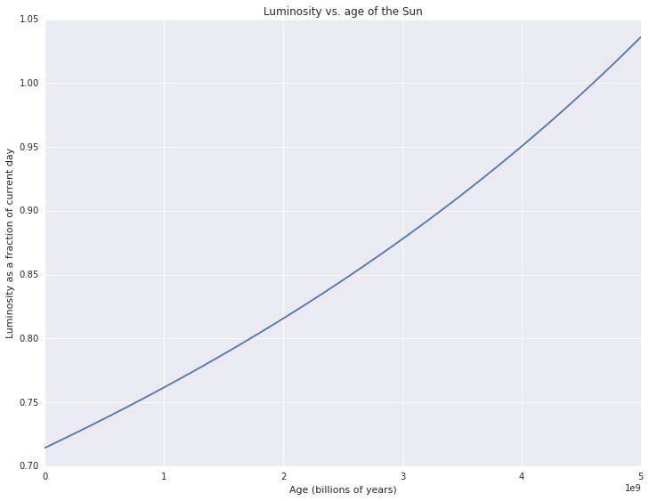
Problem 2.
What was initially just a simple file IO example was complicated by some interesting encoding issues. The Vostok ice core data was unreadable with UTF-8. So I opened the file in Firefox - some of the scientists' names were rendered improperly. I played with the encoding until it worked - unfortunately it was just listed in Firefox as "Western." I then looked up what possible encodings I could use and used the one labeled "Western Europe."
Additionally the C CSV parsing engine was having issues using the
delim_whitespace option, so I had to specify the Python engine
instead. Fortunately this dataset was pretty small (about 3000 lines)
so the speed hit wasn't really important.
I thought that having a line connecting the data points hid the decrease in data density as ice age increases, so I made it with points instead.
def problem2():
vostokT = pd.read_csv("data/Chapter1Data/iceCores/vostokT.txt",
skiprows=115,
encoding='iso8859_15', # "Western" encoding
delimiter='\s',
engine="python")
plt.figure(figsize=(12,8))
plt.title("Temperature change vs. ice age")
plt.plot(vostokT.corrected_Ice_age_GT4, vostokT.deltaTS,
marker=".", linestyle="none")
plt.xlabel("Ice age (years)")
plt.ylabel("Temperature difference from present (C)")
plt.figure(figsize=(12,8))
plt.title("Depth vs. ice age")
plt.plot(vostokT.corrected_Ice_age_GT4, vostokT.Depth,
marker=".", linestyle="none")
plt.xlabel("Ice age (years)")
plt.ylabel("Ice core depth (m)")
problem2()
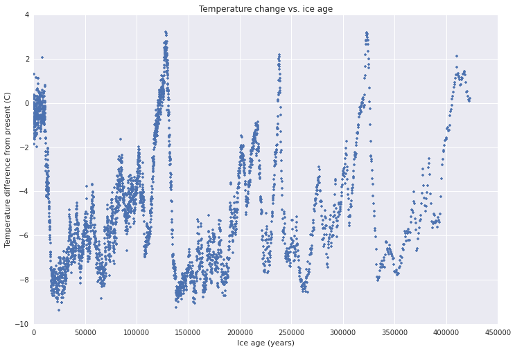
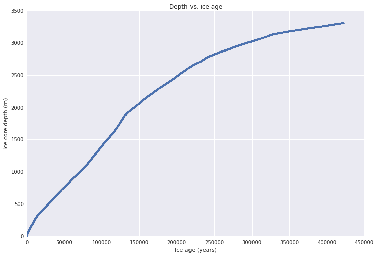
Problem 3.
This was an exercise in doing arithmetic on columns of data. I wanted to try the Pandas DataFrames out. In this example I'm just using them as a dict to store NumPy arrays, but there's a bunch of other cool stuff they can do. Later I find the standard deviation of a column with a method call on the DataFrame, which is pretty slick.
The first plot is pretty silly but it is a nice example of how to do arithmetic on arrays.
def dry_adiabat(pressures):
ground_temp = 300
surface_pressure = 1000
return ground_temp * (pressures/surface_pressure) ** (2/7)
def K_to_F(kelvins):
return (kelvins - 273) * 1.8 + 32
def problem3a():
pressures = np.arange(10, 1000)
df = pd.DataFrame({"pressures": pressures,
"dry_adiabat_K": dry_adiabat(pressures),
"dry_adiabat_F": K_to_F(dry_adiabat(pressures))})
plt.figure(figsize=(12,8))
plt.title("The dry adiabat vs. pressure")
plt.ylabel("Temperature (degrees)")
plt.xlabel("Pressure(mb)")
plt.plot(df.pressures, df.dry_adiabat_K)
plt.text(200, 160, "Kelvin")
plt.plot(df.pressures, df.dry_adiabat_F)
plt.text(200, -150, "Fahrenheit")
problem3a()
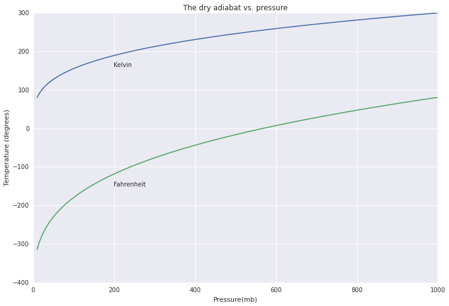
def problem3b():
gisstemp = pd.read_csv("data/Chapter1Data/GlobalWarming/GISSTemp.txt",
skiprows=28,
header=1,
encoding="utf-8",
na_values="*****",
delim_whitespace=True)
avg_temps = gisstemp["J-D"]/100 + 14
season_diffs = (gisstemp.JJA - gisstemp.DJF)/100
plt.figure(figsize=(12,9))
plt.title("Global mean temperature vs. year")
plt.xlabel("Year")
plt.ylabel("Temperature (C)")
plt.plot(gisstemp.Year, avg_temps)
plt.figure(figsize=(12,9))
plt.title("Change in strength of global seasonal cycle vs. year")
plt.xlabel("Year")
plt.ylabel("Temperature (C)")
plt.plot(gisstemp.Year, season_diffs)
problem3b()
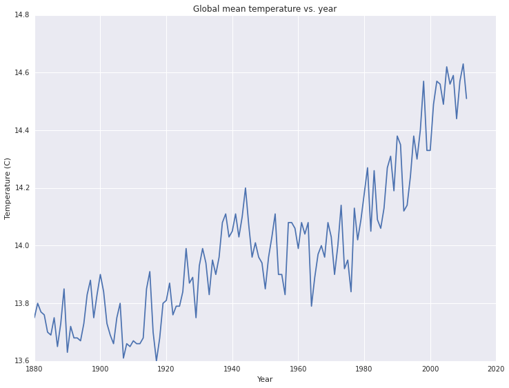
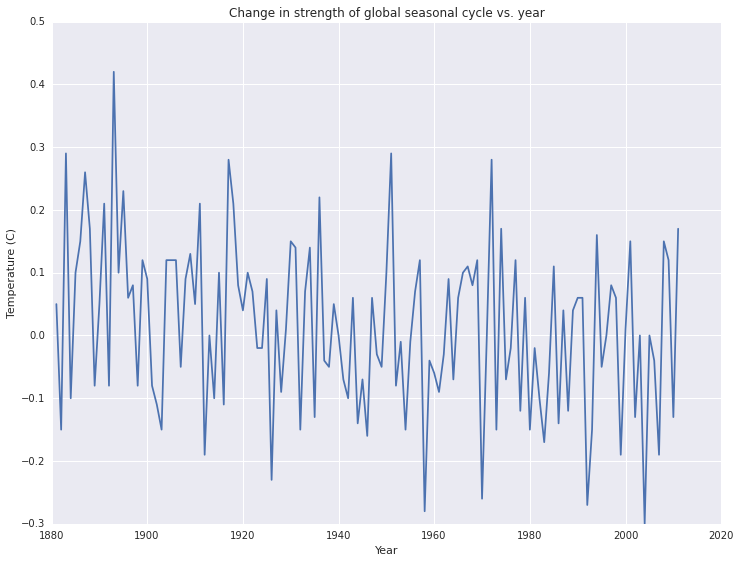
The temperature vs. year plot seems pretty reasonable. You get annual fluctuations, and you see an upward trend that wouldn't be out of place in a startup pitch deck.
The strength of the seasonal cycle seems to vary year-to-year as well. There might be a slight downward trend - perhaps the southern hemisphere winters are getting warmer? I think the variation is too great to see a trend this small, but we could do some real analysis on it if we wanted to dive deeper.
Problem 4.
Instead of writing my own polynomial interpolation function, I used
one out of SciPy. I found that
scipy.interpolate.InterpolatedUnivariateSpline is significantly
faster than scipy.interpolate.interp1d.
def problem4():
cubic = pd.DataFrame({"x": [i for i in range(-2,3)],
"y": [i**3 for i in range(-2, 3)]})
interp_cubic = InterpolatedUnivariateSpline(cubic.x, cubic.y, k=3)
xspace = np.linspace(min(cubic.x), max(cubic.x), 100)
interp_cubic_df = pd.DataFrame({"x": xspace,
"y": interp_cubic(xspace)})
plt.figure(figsize=(12, 8))
plt.title("Cubic interpolation from 5 data points")
plt.plot(cubic.x, cubic.y, marker=".", linestyle="dashed")
plt.plot(interp_cubic_df.x, interp_cubic_df.y)
vostokT = pd.read_csv("data/Chapter1Data/iceCores/vostokT.txt",
skiprows=115,
encoding='iso8859_15', # "Western" encoding
delimiter='\s',
engine="python")
interp_deut = InterpolatedUnivariateSpline(vostokT.corrected_Ice_age_GT4,
vostokT.deut)
hundred_yr_intervals = np.arange(min(vostokT.corrected_Ice_age_GT4),
max(vostokT.corrected_Ice_age_GT4),
100)
plt.figure(figsize=(12, 8))
plt.title("Vostok ice core temperature vs. ice age,\n interpolated at 100 year intervals")
plt.xlabel("Age (years)")
plt.ylabel("Temperature (C)")
plt.plot(hundred_yr_intervals, interp_deut(hundred_yr_intervals))
problem4()
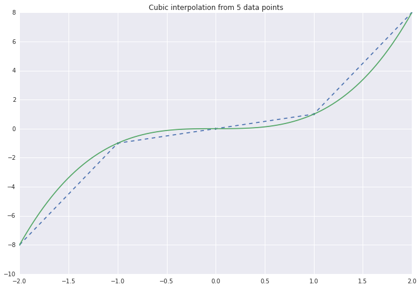
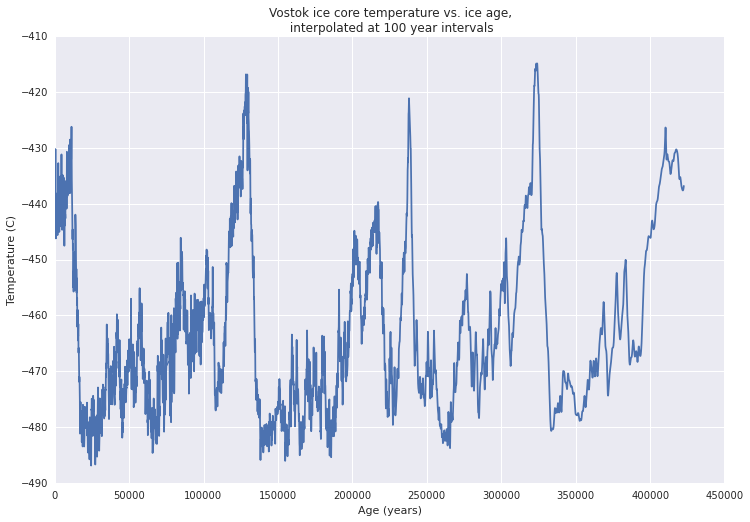
Problem 5
This is where we use sign! This problem just asked to write some
root-finding algorithms. We see that Newton's method takes way fewer
steps to converge than the bisection method does -- 3 compared to 28.
def func5(x):
return x - e**(-x)
def bisect(interval, fn, iters=0, tol=1e-8):
xbds = [interval[0], sum(interval)/2, interval[1]]
while xbds[2] - xbds[0] > xbds[1] * tol:
iters += 1
low, mid, hi = [fn(x) for x in xbds]
if sign(low) == sign(hi):
return None
if sign(low) == sign(mid):
xbds[0] = xbds[1]
else:
xbds[2] = xbds[1]
xbds[1] = (xbds[0]+xbds[2])/2
return (xbds[1], iters)
def newton(x0, fn, iters = 0, tol=1e-8, dx=1e-5):
x1 = x0 - fn(x0)/derivative(fn, x0, dx=dx)
while abs(x1 - x0) > 1e-8:
iters += 1
x0 = x1
x1 = x0 - fn(x0)/derivative(fn, x0, dx=dx)
return ((x1 + x0)/2, iters)
def problem5():
print(bisect((0, 1), func5))
print(newton(0.5, func5))
problem5()
(0.5671432893723249, 28)
(0.56714329040978251, 3)
Problem 6.
I learned how to use the Romberg integration function,
scipy.integrate.romb! You need to make sure the number of samples is
one more than a power of two, so that's what the funky ceil(log2(a))
stuff is. Beyond that this is pretty straightforward. As expected, the
integral goes to 1 pretty quickly as a increases.
def gaussian(x):
return e ** (-x**2)
def problem6():
plt.figure(figsize=(12,9))
aspace = np.linspace(0, 10, 200)
plt.title("Romberg integration of $y=\int_0^ae^{-x^2}dx$\n", fontsize=24)
plt.ylabel("$y$", fontsize=24)
plt.plot(aspace, [romb_of_a(a) for a in aspace])
plt.text(2, 0.8, r"number of steps = $2^{\lceil log_2 a\rceil}\cdot32+1$",
fontsize=18)
plt.xlabel("$a$", fontsize=24)
def romb_of_a(a):
if a == 0:
return 0
xspace = np.linspace(0, a, 2**(5 + np.ceil(log2(a)))+1)
return romb(gaussian(xspace), xspace[1] -xspace[0])
problem6()
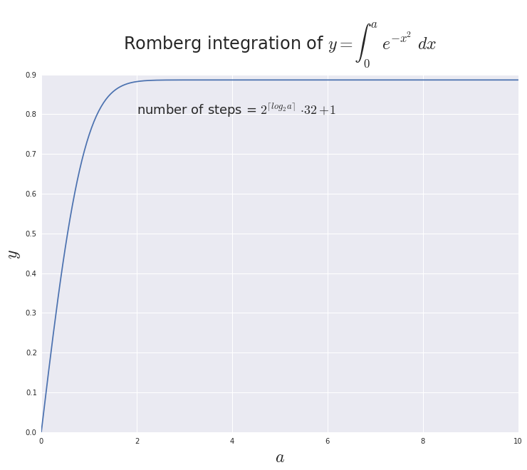
Problem 7
Instead of working hard and thinking about different numerical methods
for solving differential equations I just used scipy.integrate.odeint.
def diff_eq(a):
return (lambda y, t: a*y*(1-y))
def problem7():
tscale = np.linspace(0, 10, 100)
plt.figure(figsize=(12, 8))
plt.text(3.6, 1.1, r"$\frac{dY}{dt} = aY\cdot(1-Y)$", fontsize=24)
plt.plot(tscale, odeint(diff_eq(1), 0.01, tscale))
plt.text(5, 0.5, r"$a=1$", fontsize=16)
plt.plot(tscale, odeint(diff_eq(2), 0.01, tscale))
plt.text(2.5, 0.5, r"$a=2$", fontsize=16)
plt.plot(tscale, odeint(diff_eq(3), 0.01, tscale))
plt.text(1.65, 0.5, r"$a=3$", fontsize=16)
plt.plot(tscale, odeint(diff_eq(4), 0.01, tscale))
plt.text(0.6, 0.5, r"$a=4$", fontsize=16)
plt.xlabel("time (t)")
problem7()
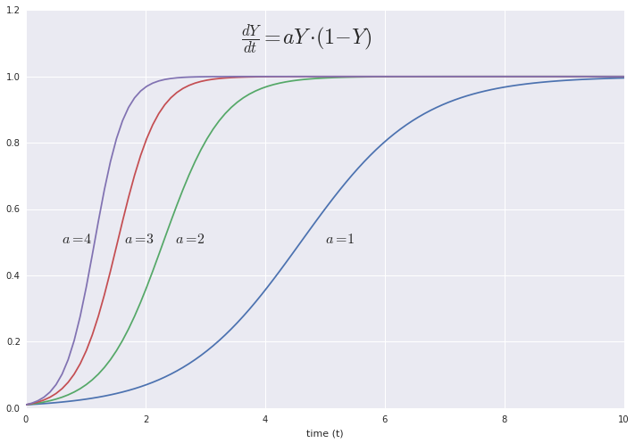
Problem 8.
Here I use a cool trick from the SciPy
cookbook by
turning two differential equations into one differential equation
which acts on a 2D vector, making it really easy to pitch to odeint.
def func8(xs, t):
y = xs[0]
z = xs[1]
fy = - z/(y**2 + z**2)
fz = y/(y**2 + z**2)
return [fy, fz]
def problem8():
y0 = 1
z0 = 0
tscale = np.linspace(0, 10, 100)
sol = odeint(func8, [y0, z0], tscale).transpose()
plt.figure(figsize=(12, 8))
plt.plot(tscale, sol[0])
plt.text(1.7, 0, r"$Y$", fontsize=24)
plt.text(0.1, -0.5, r"$dY/dt = -\frac{Z}{Y^2+Z^2}$", fontsize=18)
plt.plot(tscale, sol[1])
plt.text(3.4, 0, r"$Z$", fontsize=24)
plt.text(2.8, 0.5, r"$dZ/dt = \frac{Y}{Y^2+Z^2}$", fontsize=18)
plt.xlabel("time (t)")
problem8()
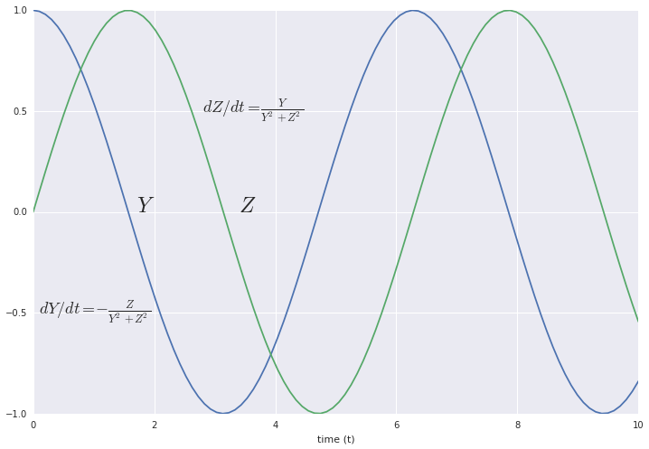
Problem 9.
Now begins a series of increasingly interesting basic physics and chemistry problems.
In this one we calculate the amount of energy that comes into the Earth from the Sun. We find that this is enough to raise our entire atmosphere off the Earth pretty quickly. This hasn't happened yet because a lot of the energy coming from the Sun ends up warming the Earth. Then this energy just gets radiated out again. This leaves little room for lifting our atmosphere.
def grav_pot(r):
"Get gravitational potential at a radius from the Earth."
return -G*M_e/r
def problem9():
weight = 10 # 10 m/s^2 * 1 kg = 10N
print("The weight of a 1kg object on the surface of the Earth is "
"10 newtons.")
joules_per_kg_100m = 1000 # 10N * 100m = 1000J
print("It takes 1000 joules to raise a 1kg mass 100m.")
insolation = sa_e * 200
print("The total insolation of the Earth is about {:.2e} watts.".format(
insolation))
delta_U = 1e4 * (grav_pot(2e5+r_earth) - grav_pot(r_earth)) # for 1 m^2
num_sec = delta_U / 200
print("It would take {:.2e} seconds, or {:.2f} years, to lift all parts "
"of the atmosphere 200 km.".format(num_sec, num_sec/seconds_per_year))
delta_U_mgh = 1e4 * 10 * 2e5
num_sec_mgh = delta_U_mgh / 200
print("If we assume that gravitational acceleration is independent of "
"position we find that it would take {:.2f} years.".format(
num_sec_mgh/seconds_per_year))
problem9()
The weight of a 1kg object on the surface of the Earth is 10 newtons.
It takes 1000 joules to raise a 1kg mass 100m.
The total insolation of the Earth is about 1.02e+17 watts.
It would take 9.54e+07 seconds, or 3.02 years, to lift all parts of the atmosphere 200 km.
If we assume that gravitational acceleration is independent of position we find that it would take 3.17 years.
Problem 10.
A quick calculation of the kinetic energy of a comet with a mass of $4 \cdot 10^9$ kg and velocity of $1 \cdot 10^4$ m/s.
def problem10():
# mv^2 / 2
K = 4e9 * 1e4 ** 2 / 2
print("The comet turns {} joules of kinetic energy into heat (and a little "
"kinetic energy for the flying debris).".format(K))
problem10()
The comet turns 2e+17 joules of kinetic energy into heat (and a little kinetic energy for the flying debris).
Problem 11.
We use Newton's law of gravitation to determine the mass of a body as a function of its radius and surface gravitational acceleration. Here's the derivation:
$$U = -\frac{GmM}{r}$$ $$\frac{\mathrm{d}U}{\mathrm{d}r} = \frac{GmM}{r^2} = ma$$ $$M = \frac{ar^2}{G}$$
def problem11():
r_titan = 2.575e6
a_titan = 1.35
a_earth = 9.8
mass_titan = r_titan**2 * a_titan / G
mass_earth = r_earth**2 * a_earth / G
print("The mass of Titan is {:.3} kg.".format(mass_titan))
print("In comparison, the mass of Earth is {:.2} kg.".format(mass_earth))
problem11()
The mass of Titan is 1.34e+23 kg.
In comparison, the mass of Earth is 6e+24 kg.
Problem 12.
A quick calculation of the potential energy of the Moon, and a reminder that heavier things do not, in fact, fall faster. Could Aristotle do this? I think not.
def problem12():
m_moon = 7.35e22
r_moon = 3.84e8
K_moon = U_moon = m_moon*(-1 * grav_pot(r_moon))
print("The kinetic energy of the Moon on impact would be {:.2} J.".format(K_moon))
v_f = (2*grav_pot(r_moon))**0.5
print("The final velocity of the Moon is {:.2} m/s and does not depend on "
"the mass of the Moon.".format(v_f))
problem12()
The kinetic energy of the Moon on impact would be 7.7e+28 J.
The final velocity of the Moon is (8.8e-14+1.4e+03j) m/s and does not depend on the mass of the Moon.
Problem 13.
If an impactor the size of the Moon hits the earth at 15,000 m/s, will it vaporize?
Another gentle reminder that mass divides out all the time when you are dealing with gravitational potential energy.
def problem13():
m_moon = 7.35e22
K_over_m = 0.5 * 1.5e4 ** 2 # 1/2 v^2
K = m_moon * K_over_m
vaporization_energy = 2e7
print("The kinetic energy released by the impact is {:.2} J.".format(K))
print("This is {:.2} J/kg.".format(K_over_m))
if K_over_m < vaporization_energy:
print("This is not enough to vaporize the impactor.")
else:
print("This is enough to vaporize the impactor.")
problem13()
The kinetic energy released by the impact is 8.3e+30 J.
This is 1.1e+08 J/kg.
This is enough to vaporize the impactor.
Problem 1.14.
We have $$M(\mathcal{L}_\circledast, d) = C-2.5\log_{10}\frac{\mathcal{L}_\circledast}{4\pi d^2}$$ where $M$ is bolometric magnitude, $L_\circledast$ is luminosity of a star, $d$ is the distance between that star and the observer, and $C$ a constant that makes the magnitude of Vega from Earth about 0.
Taking $r_0$ to be the average distance of the Earth from the Sun we have $$M_0 = C - 2.5\log{10}\frac{\mathcal{L}_\odot}{4\pi r_0^2}$$ where $M_0$ is the bolometric magnitude of the Sun as seen from Earth.
Subtracting the two we get $$M_0 - M = 2.5 (\log{10} \frac{\mathcal{L}_\circledast}{4\pi d^2} -\log_{10} \frac{\mathcal{L}_\odot}{4\pi r_0^2})$$
$$\frac{M_0-M}{2.5} = \log_{10} \frac{\mathcal{L}_\circledast r_0^2}{\mathcal{L}_\odot d^2}$$ $$\mathcal{L}_\circledast = \mathcal{L}_\odot(\frac{d}{r_0})^2 10^{\frac{M_0-M}{2.5}}$$
Which makes sense - we see that as $M$ decreases, $\mathcal{L}_\circledast$ increases. All else held constant, lower bolometric magnitude should imply a more luminous star. Additionally the implied luminosty increases as $\frac{d}{r_0}$ increases if magnitude is held constant. We also see that the units are the same on both sides of the equation, which is an encouraging sign. Now plugging the Gliese 581 numbers in, we get:
sun_lum = 3.846e26
M_0 = -26.82
r_0 = 1.496e11
m_per_parsec = 3.086e16
def bolometric(luminosity, dist):
return -18.98 - 2.5*log(luminosity/(4*pi*dist**2), 10)
def lum_mag_dist(magnitude, dist):
return sun_lum * (dist/r_0) **2 * 10**((M_0 - magnitude)/2.5)
def dist(magnitude, luminosity):
return (luminosity * r_0**2 / sun_lum * 10**((magnitude - M_0)/2.5)) ** 0.5
gliese_lum = lum_mag_dist(8.12, 6.27*m_per_parsec)
print("We need to be {:.2e} m from Gliese 581 for it to have the same apparent "
"magnitude as the Sun on Earth.".format(dist(M_0, gliese_lum)))
print("We need to be {:.2e} m from the Sun for it to have the same apparent "
"magnitude as the Sun on Earth.".format(dist(M_0, sun_lum)))
print("We need to be {:.2e} m from the Sun for it to have the same apparent "
"magnitude as Gliese 581 from Earth.".format(dist(8.12, sun_lum)))
print("We need to be {:.2e} m from Gliese 581 for it to have the same apparent "
"magnitude as Gliese 581 from Earth.".format(dist(8.12, gliese_lum)))
We need to be 1.99e+10 m from Gliese 581 for it to have the same apparent magnitude as the Sun on Earth.
We need to be 1.50e+11 m from the Sun for it to have the same apparent magnitude as the Sun on Earth.
We need to be 1.46e+18 m from the Sun for it to have the same apparent magnitude as Gliese 581 from Earth.
We need to be 1.93e+17 m from Gliese 581 for it to have the same apparent magnitude as Gliese 581 from Earth.
We would need to be orbiting at $1.99\times10^{10}$ m from Gliese 581 to get the same stellar flux as we do here on Earth.
Since flux varies as $r^2\mathcal{L}$, we could also have reached this conclusion by finding the square root ratio of the luminosities and multiplying that by Earth's orbital radius:
$$r = r_0\sqrt{\frac{\mathcal{L}_\circledast}{\mathcal{L}_\odot}}$$
Where $r$ is the orbital radius of a planet in the Gliese 581 system.
Incidentally, Wikipedia states that Gliese 581's apparent magnitude is between 10.56 and 10.58. Implications of this are left for the reader ;).
To find the absolute magnitude we just need to use the functions defined above (or we can go straight to the flux):
def abs_mag(magnitude, dist):
lum = lum_mag_dist(magnitude, dist)
flux = lum/(4*pi*(10*m_per_parsec)**2)
return -18.98 - 2.5 * log(flux, 10)
print("The absolute magnitude of the Sun is {:.2f}.".format(abs_mag(M_0, r_0)))
print("The absolute magnitude of Gliese 581 is {:.2f}."
.format(abs_mag(8.12, 6.27*m_per_parsec)))
The absolute magnitude of the Sun is 4.75.
The absolute magnitude of Gliese 581 is 9.13.
The apparent magnitude of the Sun listed on Wikipedia is also slightly higher than that found here.
Problem 1.15
To find the hydrogen-burning lifetime of a star based on its luminosity and mass, we first let $\mathcal{L}$ be luminosity, $E_f$ be energy per fusion, $m_f$ be mass per fusion, $M$ be mass of the stellar core and $t_f$ be the time of final hydrogen fusion. Assuming the star is completely hydrogen, we get:
$$M = \int_0^{t_f} \mathcal{L}\frac{m_f}{E_f}\mathrm{d}t$$.
If we assume $\mathcal{L}$ is constant, we get
$$M = \frac{\mathcal{L}m_f}{E_f}t$$ $$t = \frac{ME_f}{\mathcal{L}m_f}$$
However, we know that $\mathcal{L}$ actually varies with time, roughly according to Eq. 1.1:
$$\mathcal{L}(t) = L_{t_\odot}(1+\frac{2}{5}(1-\frac{t}{t_\odot}))^{-1}$$
Which we can plug into the integral above:
$$M=\frac{\mathcal{L_\odot}m_f}{E_f}\int_0^{t_f}(1+\frac{2}{5}(1-\frac{t}{t_\odo t}))^{-1}\mathrm{d}t$$
Let's take $t_\odot = \frac{t_f}{2}$, as recommended by the text - this somewhat eases our minds about using this approximation far away from $t_\odot$. After some $u$-substitution we can get
$$M=\frac{5\mathcal{L_\odot}m_ft_f}{4E_f}\ln\frac{7}{3}$$ $$t_f=\frac{4E_fM}{5\mathcal{L_\odot}m_f\ln\frac{7}{3}}$$
Now to answer the questions we just need to implement these equations in code, keeping in mind that about 10% of the mass of a star actually undergoes fusion.
def mass_remaining(initmass, luminosity, time):
"Luminosity needs to be a function taking time as a parameter."
proton_mass = 1.67e-27
mass_p_fusion = 4 * proton_mass
energy_p_fusion = 4.17e-12
burned = quad(luminosity, 0, time)[0] * mass_p_fusion / energy_p_fusion
return initmass - burned
def findzero(func, init = 0, bd = 1):
init_sign = sign(func(init))
bd_sign = sign(func(bd))
while init_sign == bd_sign:
init = bd
bd *= 2
init_sign = sign(func(init))
bd_sign = sign(func(bd))
return bisect([init,bd], func)
def const_lum_lifetime(initmass=2e29, lum=4e26*seconds_per_year):
return findzero(lambda t: mass_remaining(initmass,
lambda t_l: lum,
t))[0]
def var_lum_lifetime(initmass=2e29, lum=4e26*seconds_per_year):
return findzero(lambda t_0: mass_remaining(initmass,
lambda t_l: lum * luminosity(t_l, t_0),
t_0 * 2),
init=1)[0]*2
def problem15a():
print("Assuming constant luminosity of 4e26 W, a star with mass 2e30 kg has a "
"lifetime of {:.2} y.".format(const_lum_lifetime()))
print("Assuming variable luminosity of 4e26 W halfway through its Main Sequence,"
" a star with mass 2e30 kg has a lifetime of {:.2} y."
.format(var_lum_lifetime()))
mass_scale = np.linspace(0.8, 10, 500) # ratio to solar mass
plt.figure(figsize=(12,9))
plt.plot(mass_scale, [const_lum_lifetime(initmass=m*2e29,
lum=4e26*seconds_per_year*m**(3.5)) for m in mass_scale])
plt.plot(mass_scale, [var_lum_lifetime(initmass=m*2e29,
lum=4e26*seconds_per_year*m**(3.5)) for m in mass_scale])
plt.title("The dependence of stellar lifetime on stellar mass,\n"
"assuming constant luminosity")
plt.xlabel("Mass ($M_\odot$)")
plt.ylabel("Time ($10^{10}$y)")
problem15a()
Assuming constant luminosity of 4e26 W, a star with mass 2e30 kg has a lifetime of 9.9e+09 y.
Assuming variable luminosity of 4e26 W halfway through its Main Sequence, a star with mass 2e30 kg has a lifetime of 9.3e+09 y.
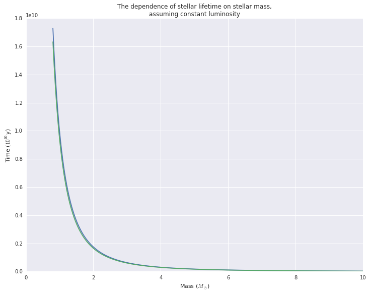
We see that the radiation flux of the surface of a star is:
$$F_{out} = 5.67\cdot10^{-8}T^4$$
So the luminosity is given by
$$\mathcal{L} = F_{out}4\pi r^2 = 5.67cdot10^{-8}T^4\cdot4\pi r^2$$
And the surface temperature is given by
$$T=(\frac{\mathcal{L}}{5.67\cdot10^{-8}\cdot4\pi r^2})^{\frac{1}{4}}$$
Ignoring the compressibility of the star, its mass should vary as $m = \frac{4}{3}\pi r^3 \Rightarrow r = (\frac{3m}{4})^{\frac{1}{3}} $.
So its temperature varies by
$$T=\Bigg(\frac{\mathcal{L}}{5.67\cdot10^{-8}\cdot4\pi (\frac{3M_\circledast}{4})^{\frac{2}{3}}}\Bigg)^{\frac{1}{4}}$$
Since $\mathcal{L} \propto M_\circledast^{3.5}$ (Eq 1.2) we have
$$T=\Bigg(\frac{M_\circledast^{3.5}}{5.67\cdot10^{-8}\cdot4\pi (\frac{3M_\circledast}{4})^{\frac{2}{3}}}\Bigg)^{\frac{1}{4}}$$
And as $T$ increases we see that $M_\circledast$ must increase, which as we saw earlier, means that the lifetime of the star decreases.
Problem 16.
What's the power density of the Sun compared to that of a human?
How much hydrogen would I need for my entire lifetime if we ran of fusion?
With a bit of simple math we can get a decent feel for these things.
def problem16():
sun_lum = 3.84e26
sun_core_mass = 1.99e29
sun_power_density = sun_lum / sun_core_mass
human_power = 1e2
human_mass = 70
human_power_density = human_power / human_mass
print("A human uses about {:.2} watts/kg while the Sun uses {:.2} watts/kg."
.format(human_power_density, sun_power_density))
proton_mass = 1.67e-27
mass_p_fusion = 4 * proton_mass
energy_p_fusion = 4.17e-12
energy_p_kg = energy_p_fusion / mass_p_fusion
seconds_p_year = 365*24*60*60
human_lifetime_energy = human_power * seconds_p_year * 80
print("If a human ran on hydrogen fusion it would need {:.2} kg of hydrogen"
" for a lifetime supply of energy."
.format(human_lifetime_energy/energy_p_kg))
problem16()
A human uses about 1.4 watts/kg while the Sun uses 0.0019 watts/kg.
If a human ran on hydrogen fusion it would need 0.0004 kg of hydrogen for a lifetime supply of energy.
Problem 17.
How much calcite does 1 Gt of carbon turn into? What kind of volume are we talking here?
def problem17():
CaCO3_mass = 100.09
C_mass = 12.01
CaCO3_p_C = CaCO3_mass / C_mass
area_KS = 2.13e5
CaCO3_density = 2700 * 1e-12 # Gt/m^3
print("Each Gt of C, turned into CaCO3, is {:.2} Gt.".format(CaCO3_p_C))
print("This amount would cover Kansas in a layer {:.2} m thick."
.format(CaCO3_p_C/CaCO3_density/area_KS))
problem17()
Each Gt of C, turned into CaCO3, is 8.3 Gt.
This amount would cover Kansas in a layer 1.4e+04 m thick.
Problem 18.
What does 9 Gt of additional carbon in the form of $\mathrm{CO}_2$ mean, in terms of molecule count and atmospheric concentration?
def problem18():
CO2_mass = 44.01
avogadro = 6.02e23
C_mass = 12.01
total_CO2_mass = CO2_mass / C_mass * 9e15 # 9 Gt of carbon in grams
total_CO2_number = total_CO2_mass / CO2_mass * avogadro
atmosphere_n = 1e44
print("9 Gt carbon emissions is {:.2} CO2 molecules, which is {:.2}ppm."
.format(total_CO2_number, total_CO2_number/atmosphere_n * 1e6))
problem18()
9 Gt carbon emissions is 4.5e+38 CO2 molecules, which is 4.5ppm.
Problem 19.
Some basic $\delta$ calculations.
def problem19():
return((1-0.037)*O18_p_O16,
(1-0.438)*D_p_H)
problem19()
(0.0019310206536996193, 8.753894080996886e-05)
So we see that in ice with $\delta^{18}\mathrm{O}$ of -37 permil the ratio of $^{18}\mathrm{O}$ to $^{16}\mathrm{O}$ is 0.0019. We also see that in ice with $\delta\mathrm{D}$ of -438 permil the ratio of $\mathrm{D}$ to $\mathrm{H}$ is $8.75\cdot10^{-5}$.
Problem 20.
What happens when you remove 300 m of the oceans' depth and freeze it all in a glacier with $\delta\mathrm{D}$ of -420 permil?
$$(1+\delta_1)f_1+(1+\delta_2)f_2=1$$ $$\delta_2 = \frac{1-(1+\delta_1)f_1}{f_2} - 1$$
And $f_2 = 1-f_1$ so $$\delta_2 = \frac{1-(1+\delta_1)f_1}{1-f_1} - 1$$
def problem20():
ocean_vol = 1.4e18 # m^3
ocean_sa = 3.6e14 # m^2
removed_frac = 300 * ocean_sa / ocean_vol
removed_dD = -0.42
remaining_dD = (1-(1+removed_dD)*removed_frac)/(1-removed_frac) -1
return remaining_dD
problem20()
0.03510835913312693
So if we removed 300 m depth of ocean water to form an Antarctic glacier with $\delta\mathrm{D}$ of -420 permil this would increase the $\delta\mathrm{D}$ of the ocean water by 35 permil.
Problem 21.
We have
$$r_1 = (1 + \epsilon) r_2$$
And for any $i$, with $r_s$ the isotopic ratio of some standard,
$$r_i = (1 + \delta_i) r_s$$
Plugging this in we get
$$(1+\delta_1)r_s = (1+\epsilon) (1+\delta_2) r_s$$ $$1+\delta_1 = 1 + \delta_2 + \epsilon\, (1 + \delta_2)$$ $$\delta_1 - \delta_2 = (1+\delta_2)\, \epsilon$$ $$\blacksquare$$
At 290 K the $\delta^{18}\mathrm{O}$ of water vapor in equilibrium with liquid with $\delta^{18}\mathrm{O}$ of 0 is -10 permil.
$$ \delta_1 - \delta_2 = (1+\delta_2)\, \epsilon $$ $$ \epsilon = -\frac{\delta_2}{1+\delta_2} $$
If we take phase 1 to be the liquid water and phase 2 to be the water vapor we have
$$ \epsilon = \frac{0.01}{0.99} = 0.010101... $$
If we take phase 2 to be liquid water and phase 1 to be the water vapor we have
$$ \epsilon = \frac{0.01}{1} = 0.01 $$
Problem 22.
We know that
$$\delta_0 = 0 = \delta_{vapor}f_{vapor} + \delta_{liquid}(1-f_{vapor})$$
$$\delta_{vapor}f_{vapor} = -\delta_{liquid}(1-f_{vapor})$$
Assuming the experiment occurs at 290K we can use $\delta_{vapor} = -0.01$. It is also stated in the problem that $f_{vapor} = 0.01$.
def d_source_of_t(epsilon, d_source_0, f_source, t):
d_sources = d_source_0-epsilon*(1-f_source**t)
return d_sources
def problem22():
ntrials = 400
f_source = 0.99
d_source_0 = 0
epsilon = -0.01
evap = partial(d_source_of_t, epsilon, d_source_0, f_source)
d_liqs = [evap(t) for t in range(ntrials)]
d_vaps = [d_liq + epsilon for d_liq in d_liqs]
plt.figure(figsize=(12,8))
plt.title("Change in $\delta^{18}\mathrm{O}$ over iterations of evaporation at 290K,\n"
"relative to $\delta^{18}\mathrm{O}$ of initial liquid water")
plt.plot(range(ntrials), d_vaps)
plt.plot(range(ntrials), d_liqs)
plt.ylabel("$\delta^{18}\mathrm{O}$")
plt.xlabel("Timesteps")
plt.text(40, 0.003, "liquid water")
plt.text(60, -0.006, "water vapor")
problem22()
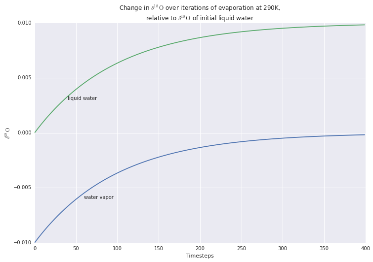
We see that as time goes on the water vapor asymptotically approaches 0 permil relative to the initial liquid. This fits with our intuition - as the liquid water all turns into water vapor, the water vapor comes to represent all of the initial water. Additionally since less and less water is changing phase in a given time period, the change in isotopic composition also slows down as time goes on.
Problem 23.
We have two lakes, separated by mountains. Water evaporates from the first lake, goes over the mountain into the second lake. As the water goes over the mountain some of it condenses out, so the water that makes it to the second lake is lighter.
In part a, we calculate the magnitude of the preference.
In part b, we see how this preference affects the $\delta^{18}\mathrm{O}$ of the different lakes as a function of transferred volume.
In part c, we add in a flow of water from the second lake to the first lake to offset the evaporation from the first lake. We then see how the system equilibrates.
def d_source_of_frac(func, frac_gone, resolution=0.01):
frac_remaining = 1 - frac_gone
final_time = log(frac_remaining, (1-resolution))
return func(final_time)
def d_target(d_source_0, d_source, source_remaining):
return (d_source_0 - source_remaining*d_source) / (1-source_remaining)
def problem23a(ntrials, verbose=False):
f_source = 0.99
d_source_0 = -0.01
epsilon = 0.01
condense = partial(d_source_of_t, epsilon, d_source_0, f_source)
d_vaps = [condense(t) for t in range(ntrials)]
d_liqs = [d_vap + epsilon for d_vap in d_vaps]
if verbose:
print("After {} timesteps the vapor's ratio of O18 is {:.2f} permil relative"
" to that of the lake.".format(ntrials, d_vaps[-1]*1000))
return d_vaps[-1]
def problem23b(mountain_steps, remaining_lake1 = 0.75, verbose=False):
frac_evap = 0.01
ntrials = 500
f_lake2 = 0.99**mountain_steps * frac_evap
f_lake1 = 1 - f_lake2
f_source = f_lake1
d_source_0 = 0
epsilon = problem23a(mountain_steps, verbose=verbose)
travel_over_mtn = partial(d_source_of_t, epsilon, d_source_0, f_source)
# fracs is fractions of total that have been moved to lake2
# thus 1-frac is the fraction remaining in lake1
fracs = np.linspace(0, 0.99, 100)
d_lake1s = [d_source_of_frac(travel_over_mtn, frac) for frac in fracs]
d_lake2s = [d_target(d_source_0, d_lake1, 1-frac)
for frac, d_lake1 in zip(fracs, d_lake1s)]
d_lake1_25 = d_source_of_frac(travel_over_mtn, 1-remaining_lake1)
d_lake2_25 = d_target(d_source_0, d_lake1_25, remaining_lake1)
result = {"fracs": fracs,
"d_lake1s": d_lake1s,
"d_lake2s": d_lake2s,
"d_lake1_25": d_lake1_25,
"d_lake2_25": d_lake2_25,
"evap_epsilon": epsilon}
return result
def problem23c(d_lake1_25, d_lake2_25, evap_epsilon, **kwargs):
f_12 = 0.99 # prop. of lake 1 remaining after some goes to lake 2
d_lake1s = [d_lake1_25]
d_lake2s = [d_lake2_25]
for n in range(250):
d_lake1_n = d_source_of_t(evap_epsilon, d_lake1s[-1], f_12, 1)
# now we know isotopic composition of lake2
d_lake2_n = d_target(0, d_lake1_n, 0.75)
# now we find the isotopic composition of lake1 which is basically
# a weighted average
d_lake1_n = f_12 * d_lake1_n + (1- f_12) * d_lake2_n
d_lake1s.append(d_lake1_n)
d_lake2s.append(d_lake2_n)
return d_lake1s, d_lake2s
def problem23():
lake_init_state_50 = problem23b(50, verbose=True)
lake_init_state_75 = problem23b(75, verbose=True)
plt.figure(figsize=(12,8))
plt.plot(lake_init_state_50["fracs"], lake_init_state_50["d_lake1s"])
plt.text(0.3, 0.005, "Lake 1")
plt.plot(lake_init_state_50["fracs"], lake_init_state_50["d_lake2s"])
plt.text(0.6, -0.005, "Lake 2")
plt.title("$\delta^{18}\mathrm{O}$ of lakes 1 and 2 vs. \n"
"fraction of lake 1 transferred to lake 2")
plt.ylabel("$\delta^{18}\mathrm{O}$")
plt.xlabel("Fraction of lake 1 in lake 2")
d_lake1s_50, d_lake2s_50 = problem23c(**lake_init_state_50)
d_lake1s_75, d_lake2s_75 = problem23c(**lake_init_state_75)
plt.figure(figsize=(12,8))
plt.plot(list(range(251)), d_lake1s_50)
plt.text(50, 0.0025, "Lake 1, short mountain")
plt.plot(list(range(251)), d_lake2s_50)
plt.text(50, -0.0095, "Lake 2, short mountain")
plt.plot(list(range(251)), d_lake1s_75)
plt.text(5, 0.0035, "Lake 1, tall mountain")
plt.plot(list(range(251)), d_lake2s_75)
plt.text(5, -0.011, "Lake 2, tall mountain")
plt.title("$\delta^{18}\mathrm{O}$ of lakes 1 and 2 vs. \n"
"time")
plt.ylabel("$\delta^{18}\mathrm{O}$")
plt.xlabel("time")
print(d_lake1s_50[-1], d_lake2s_50[-1], d_lake1s_75[-1], d_lake2s_75[-1])
problem23()
After 50 timesteps the vapor's ratio of O18 is -13.89 permil relative to that of the lake.
After 75 timesteps the vapor's ratio of O18 is -15.25 permil relative to that of the lake.
0.003333277271129784 -0.010416491472280574 0.003659119816862611 -0.011434749427695661
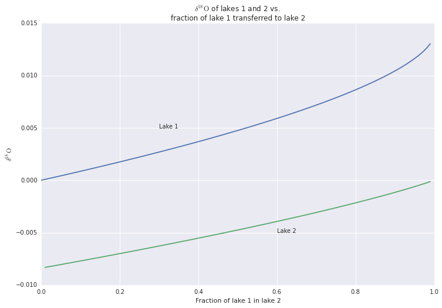
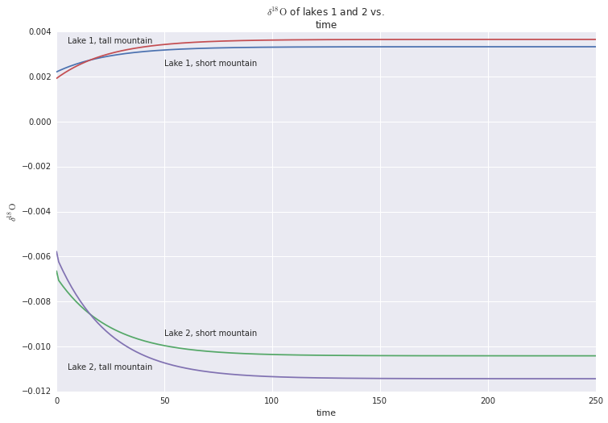
In the first graph, we see the isotopic ratio as a function of how much water has moved from one lake to the other. We see that as more and more water moves to lake 2 it becomes heavier and heavier, approaching a $\delta^{18}\mathrm{O}$ of near zero. We also see that the slopes of the lake 1 curve and the lake 2 curve start out similarly, but diverge near the end as lake 1 dries up.
In the second graph, we see the isotopic ratio as a function of time after lake 2 begins emptying. Here we have set lake 2 to empty when it reaches 25% the volume of lake 1. We see that the $\delta^{18}\mathrm{O}$ approaches about 3.3 permil for Lake 1 and about -10.4 permil for Lake 2. This process is analogous to transferring sea water to a glacier. We can think of lake 1 as the sea water, and lake 2 as the glacier. If all of lake 2 freezes, its isotopic composition is the same as if it was liquid, so we have the effect in the first graph. Now if we have lake 2, the glacier, melt at a rate so that the volume equilibrate when lake 2 has 25% of the total volume, we get the effect in the second graph.
If we increase the mountain height we increase the difference between lake 1 and the inflow into lake 2. This causes the equilibrium states of lake 1 and lake 2 to shift apart, with lake 1 going up to about 3.7 permil and lake 2 going down to about -11.4 permil. This effect is analogous to that of lowering the temperature of a glacier as both increase the isotopic difference between the sea water and the newly transferred glacier/lake 2 water.
Problem 24.
Let's take $\delta_a$ to be the initial $\delta^{13}\mathrm{C}$ of the atmosphere and $\delta_{in}$ to be that of the released carbon. Let's also use $\delta_a'$ to denote the new $\delta^{13}\mathrm{C}$ of the atmosphere after the influx of light carbon. Then we have
$$\delta_a' = f_a\delta_a + f_in \delta_{in}$$
Where $f_a$ is the fraction of the total carbon that was original, and $f_{in}$ is the fraction that makes up the influx of carbon. Since $f_a + f_{in} = 1$ we have
$$\delta_a' - \delta_a = f_in(\delta_{in} - \delta_a)$$
We can see that $\delta_a$ does have an effecct on $\delta_a' - \delta_a$. This makes sense - if the atmospheric carbon was strangely light this release of organic carbon would actually make the atmospheric carbon heavier.
However, if we assume the atmosphere hasn't changed much since the organic carbon was plants we can assume that the $\delta_{in}$ is -25 permil relative to $\delta_a$ and we can set $\delta_a=0$. So what matters is really the relative difference between $\delta_{in}$ and $\delta_a$.
def problem24(initcarbon, d_in, influx_amt = 700, d_a = 0):
f_a = initcarbon / (700 + initcarbon)
f_in = 700 / (700 + initcarbon)
Dd = f_in * (d_in - d_a)
print("When {} Gt of carbon with dC13 of {:.2f} permil is released into an atmosphere \n"
"containing {} Gt carbon with dC13 of {:.2f} permil, the dC13 of the atmosphere \n"
"changes by {:.2f} permil.".format(influx_amt,
d_in*1000.,
initcarbon,
d_a*1000.,
Dd*1000.))
problem24(700, -0.025)
problem24(1400, -0.025)
problem24(700, -0.050)
problem24(70000, -0.025, influx_amt=7000)
When 700 Gt of carbon with dC13 of -25.00 permil is released into an atmosphere
containing 700 Gt carbon with dC13 of 0.00 permil, the dC13 of the atmosphere
changes by -12.50 permil.
When 700 Gt of carbon with dC13 of -25.00 permil is released into an atmosphere
containing 1400 Gt carbon with dC13 of 0.00 permil, the dC13 of the atmosphere
changes by -8.33 permil.
When 700 Gt of carbon with dC13 of -50.00 permil is released into an atmosphere
containing 700 Gt carbon with dC13 of 0.00 permil, the dC13 of the atmosphere
changes by -25.00 permil.
When 7000 Gt of carbon with dC13 of -25.00 permil is released into an atmosphere
containing 70000 Gt carbon with dC13 of 0.00 permil, the dC13 of the atmosphere
changes by -0.25 permil.
We see that in our simulation of the PETM we have underestimated the amount of lightening by a factor of five. Assuming the masses of the carbon flows given in the book are not wildly inaccurate, this difference must be mostly accounted for by the assumption that the $\delta^{13}\mathrm{C}$ of carbonates in the ocean mirrors the shift in $\delta^{13}\mathrm{C}$ of the entire carbon pool, and that the carbon is distributed evenly throughout the carbon pool. For example, if the lighter carbon was quickly absorbed into the oceans and deposited, the carbonates would be lighter than the pool as a whole.
Problem 25.
We look at an atmosphere that has a $\delta^{13}\mathrm{C}$ of -6 permil and introduce photosynthesis. We compare the effect of photosynthesis without any additional outgassing to compensate for organic burial to that of photosynthesis with outgassing.
def problem25(outgas_rate, ntimesteps, photosynthesis_rate=0.01):
# outgas rate as a fraction of initial atmospheric mass
photosynthesis_rate = 0.01
d_outgas = -0.006
d_org = d_outgas - 0.025
d_atms = [d_outgas]
d_orgs = [d_org]
for t in range(ntimesteps):
d_atm_t = d_source_of_t(-0.025, d_outgas, 1 - photosynthesis_rate, t)
#outgassing adjustment
d = (1 - outgas_rate) * d_atm_t + outgas_rate * d_outgas
d_atms.append(d)
d_org_t = d_atms[-1] - 0.025
d_orgs.append(d_org_t)
return d_atms, d_orgs
timesteps = 250
d_atms_no_out, d_orgs_no_out = problem25(0, timesteps)
d_atms, d_orgs = problem25(0.01, timesteps, photosynthesis_rate=0.01)
plt.figure(figsize=(12, 8))
plt.title("$\delta^{13}\mathrm{C}$ of atmospheric and organic carbon vs. years")
plt.xlabel("time(years)")
plt.ylabel("$\delta^{13}\mathrm{C}$ (permil)")
plt.plot(range(timesteps), d_atms_no_out[:-1])
plt.text(5, 0.006, "atmosphere, no outgassing")
plt.plot(range(timesteps), d_orgs_no_out[:-1])
plt.text(5, -0.019, "organic carbon, no outgassing")
plt.plot(range(timesteps), d_atms[:-1])
plt.text(37, 0, "atmosphere, outgassing")
plt.plot(range(timesteps), d_orgs[:-1])
plt.text(37, -0.026, "organic carbon, outgassing")
<matplotlib.text.Text at 0x2b6a33765748>

If we were to take a core sample we would find a similar curve to this, but it would be compressed into a log scale on the X axis. because it takes longer to lay down a certain depth of organic carbon as less and less carbon is being taken out of the atmosphere.
We see that the outgassing has only a slight downwards effect on the photosynthesis effect as a whole. This isn't affected by the total amount of carbon in the system - however, it is affected by the rate of outgassing required. Higher burial rate
The mass of $\mathrm{O}_2$ in the atmosphere increases without bound in the outgassing case. This does not happen because there are critters like us that turn it back into CO2.
Problem 26.
We have some benthic foram data that shows the historical levels of $\delta^{13}\mathrm{C}$ and $\delta^{18}\mathrm{O}$. We would like to see how this data matches up with the mechanisms we modeled in problems 23 and 25.
def d13C_by_f_org(f_org):
"""Get equilibrium d13C of atmosphere by burial rate, assuming equilibrium
between photosynthesis and burial.
"""
outgas_d = -0.006
f_carb = 1 - f_org
return (outgas_d + f_carb * (-0.025)) * 1000
def d18O_by_ice_volume(ice_volume):
"""Get equilibrium d13O of atmosphere by burial rate, assuming equilibrium
between photosynthesis and burial.
"""
ocean_volume = 1 - ice_volume
mountain_steps = 50
init_state = problem23b(mountain_steps, ocean_volume)
timesteps = 1000
d_oceans, d_glaciers = problem23c(**init_state)
return (1-ice_volume) * d_glaciers[-1] * 1000
def problem26():
benthic = pd.read_csv("data/Chapter1Data/marineCores/BenthicTropPacific.txt",
skiprows=41,
delim_whitespace=True)
d13C = benthic["d13Cforams-b"]
d13Crange = max(d13C) - min(d13C)
d13Cstddev = benthic.std(axis=0)["d13Cforams-b"]
print("d13C varied by {:.2} permil and the stddev was {:.2} permil."
.format(d13Crange, d13Cstddev))
burial_space = np.linspace(0, 1, 100)
d13C_burial = [d13C_by_f_org(r) for r in burial_space]
plt.figure(figsize=(12, 8))
plt.title("$\delta^{13}\mathrm{C}$ of carbonates vs. burial rate")
plt.plot(burial_space, d13C_burial)
d18O = benthic["d18Oforams-b"]
d18Orange = max(d18O) - min(d18O)
d18Ostddev = benthic.std(axis=0)["d18Oforams-b"]
print("d18O varied by {:.2} permil and the stddev was {:.2} permil."
.format(d18Orange, d18Ostddev))
icevol_space = np.linspace(0, 0.999, 50)
d18O_icevol = [d18O_by_ice_volume(v) for v in icevol_space]
plt.figure(figsize=(12, 8))
plt.title("$\delta^{18}\mathrm{O}$ of the ocean vs. burial rate")
plt.plot(icevol_space, d18O_icevol)
plt.gca().ticklabel_format(useOffset=False)
problem26()
d13C varied by 1.4 permil and the stddev was 0.24 permil.
d18O varied by 2.2 permil and the stddev was 0.38 permil.
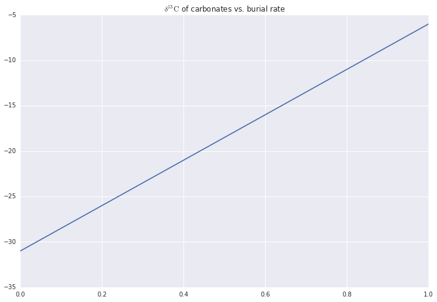
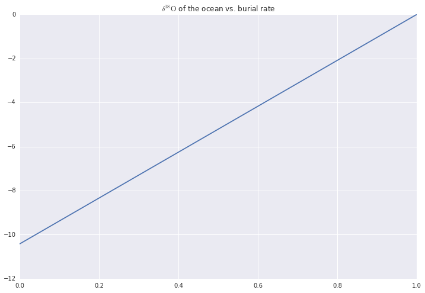
We see that we would need to vary the burial rate by about 5% of the total volume of the atmosphere to achieve the maximum variation in $\delta^{13}\mathrm{C}$ we see historically. We also see that the higher the burial rate, the higher the $\delta^{13}\mathrm{C}$ of carbonates. This makes sense as the higher the burial rate, the more light carbon is taken out of the atmosphere, causing the remaining carbon to be relatively heavy.
We also see that we would need to vary the fraction of the oceans locked in ice by almost 20% to achieve the maximum variation in historical $\delta^{18}\mathrm{O}$. We also see that as more of the oceans freeze, the oceans have more $\delta^{18}\mathrm{O}$. This makes sense as glaciers tend to be isotopically lighter than the oceans.
In an earlier problem we assumed a burial rate of around 1% - this seems to indicate that a 5% fluctuation is very large, whereas a 20% fluctuation in the ice volume seems more plausible, and wins my vote for "more plausible extreme condition."